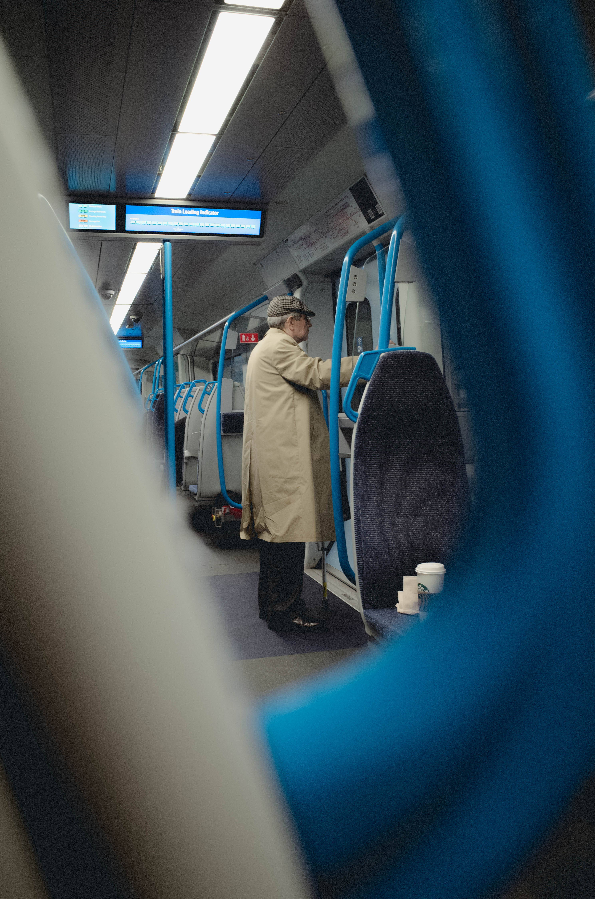
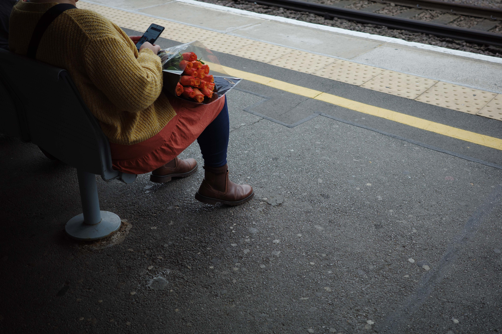
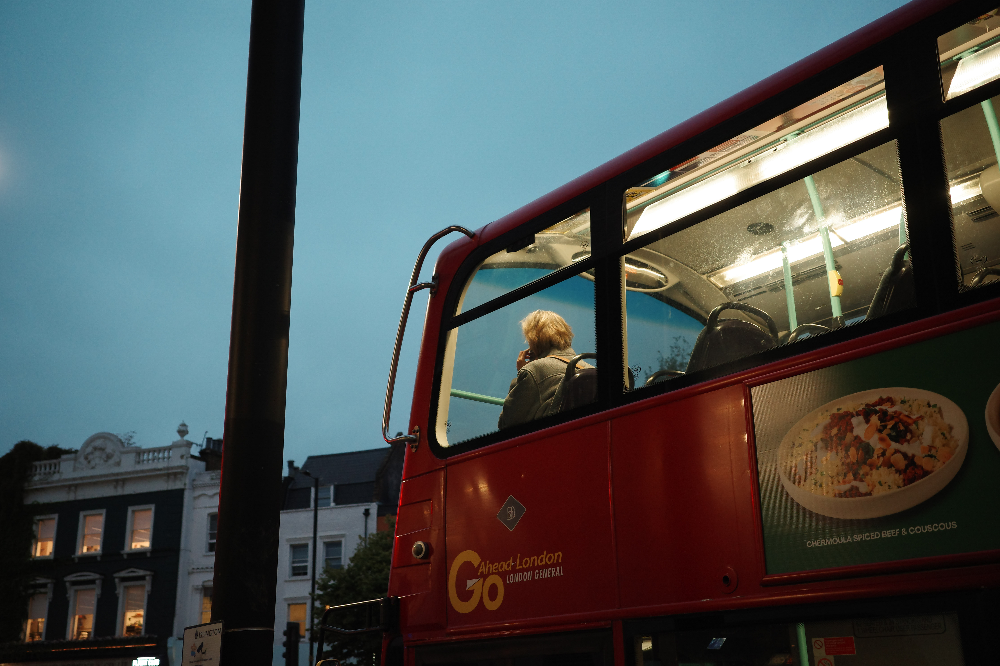
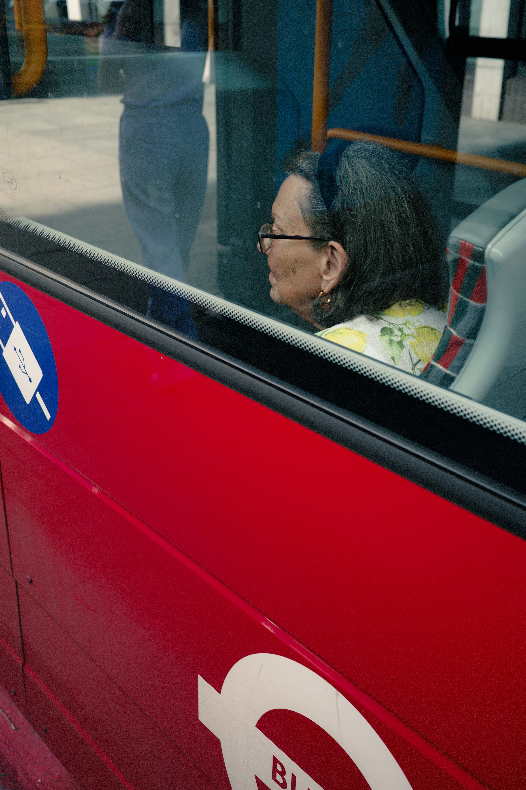
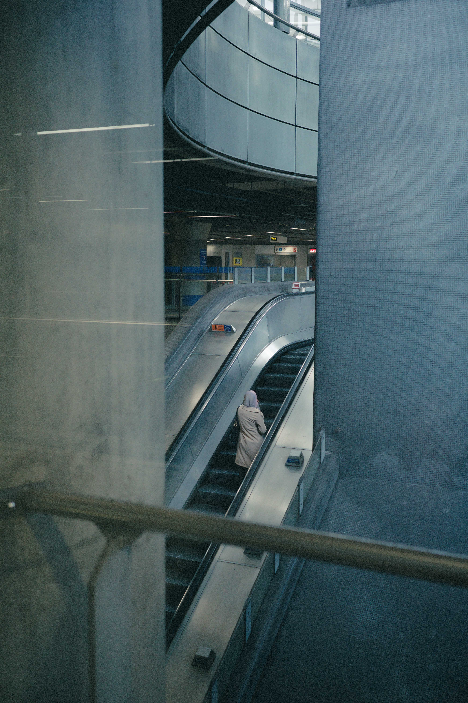
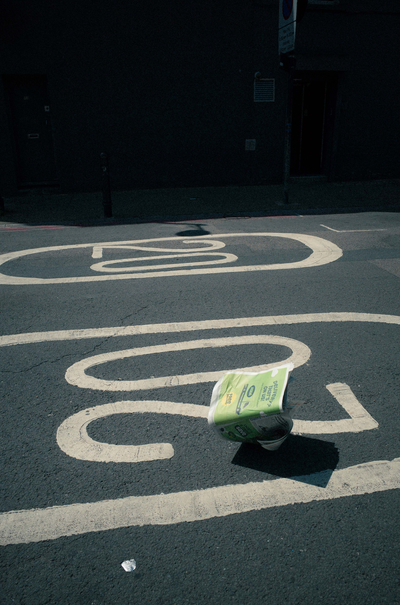

A study of the moments in between: waiting for trains, crossing streets, sitting on buses, standing on platforms. Time that is neither work nor leisure, but simply passes.
under the ground



above the ground





